If you missed class last week, please check in with me to get your (potentially) new group number!
Locate and open today’s QMD
Catch up on announcements and messages on Slack
Check your Feedback Spreadsheet for recent updates
Learning Goals
Clearly describe the recursive binary splitting algorithm for tree building for both regression and classification
Compute the weighted average Gini index to measure the quality of a classification tree split
Compute the sum of squared residuals to measure the quality of a regression tree split
Explain how recursive binary splitting is a greedy algorithm
Explain how different tree parameters relate to the bias-variance tradeoff
Notes: Nonparametric Classification
Where Are We?
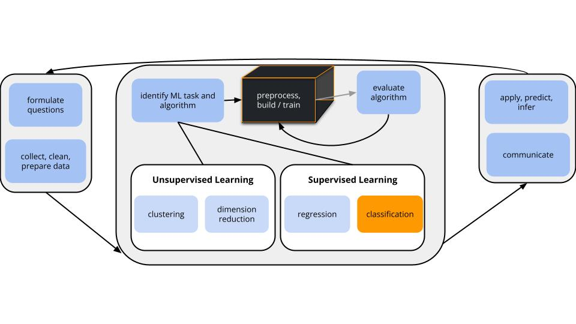
CONTEXT
world = supervised learning
We want to model some output variable \(y\) using a set of potential predictors (\(x_1, x_2, ..., x_p\)).
task = CLASSIFICATION \(y\) is categorical
algorithm = NONparametric
GOAL
Build and evaluate nonparametric classification models of some categorical outcome y.
Quick Recap
How do we evaluate classification models?
Binary Metrics:
Accuracy (overall; compare to no information rate = frequency of largest class)
Sensitivity (accuracy among Y = 1, true positive rate, recall)
Specificity (accuracy among Y = 0, true negative rate)
False Positive Rate = 1 - Specificity
ROC AUC (accounts for many thresholds)
the probability that a randomly chosen case from the Y=1 class will receive, from the classifier, a higher predicted probability than a randomly chosen case from the Y = 0 class
More Binary Metrics [optional]:
False Negative Rate = 1 - Sensitivity
J Index = Sensitivity + Specificity - 1
Balanced Accuracy = (Sens + Spec)/2
Kappa (how much better your model is over using class frequencies)
MCC (correlation between truth and prediction)
Positive Predictive Value (accuracy among those we predicted Y = 1, precision)
Precision-Recall AUC (accounts for many thresholds)
F measure = \((1 + \beta^2) * precision*recall/((\beta^2*precision) +recall)\) (chosen beta gives one or the other more weight)
# Load & process data# NOTE: Our y variable has to be converted to a "factor" variable, not a character stringland <-read.csv("https://kegrinde.github.io/stat253_coursenotes/data/land_cover.csv") %>%rename(type = class) %>%mutate(type =as.factor(type))
# There are 9 land types! # Let's consider all of them (not just asphalt, grass, trees)land %>%count(type)
type n
1 asphalt 59
2 building 122
3 car 36
4 concrete 116
5 grass 112
6 pool 29
7 shadow 61
8 soil 34
9 tree 106
# There are 675 data points and 147 potential predictors of land type!dim(land)
[1] 675 148
# For now: we'll consider Mean_G & NDVI# (It's not easy to visually distinguish between 9 colors!)# Plot type vs Mean_G aloneggplot(land, aes(x = Mean_G, fill = type)) +geom_density(alpha =0.5) +scale_fill_manual(values =c("#000000", "darkgray", "red", "#7570B3", "lightgreen", "blue", "#E6AB02", "brown", "#66A61E")) +theme_minimal()
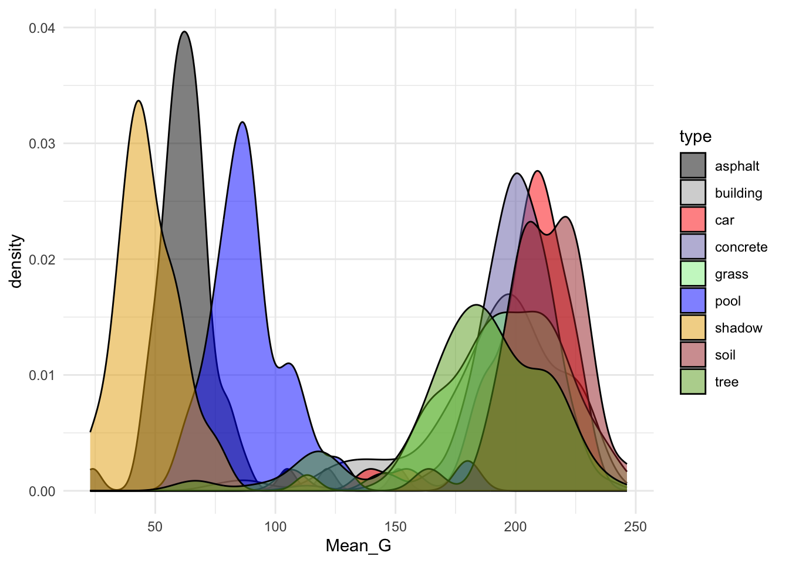
# Plot type vs NDVI aloneggplot(land, aes(x = NDVI, fill = type)) +geom_density(alpha =0.5) +scale_fill_manual(values =c("#000000", "darkgray", "red", "#7570B3", "lightgreen", "blue", "#E6AB02", "brown", "#66A61E")) +theme_minimal()
Check out the classification regions for two KNN models of land type by Mean_G and NDVI: using K = 1 neighbor and using K = 16 neighbors.
Though the KNN models were built using standardized predictors, the predictors are plotted on their original scales here.
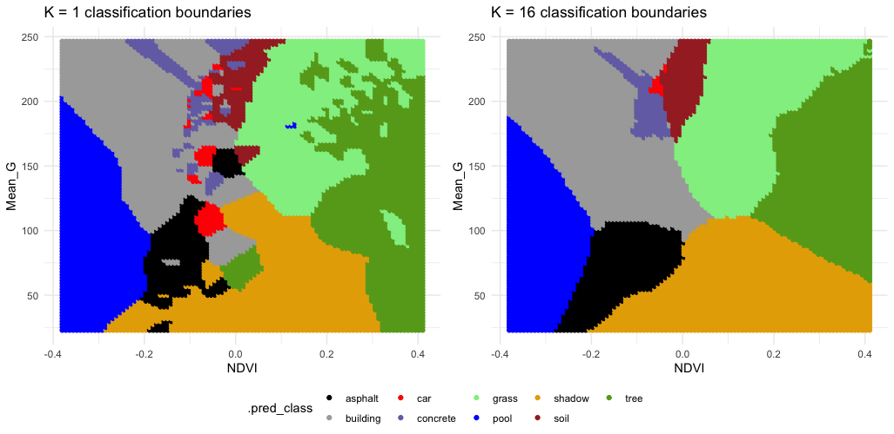
Discuss:
What do KNN regression and classification have in common?
How are they different?
What questions do you have about…the impact of K, the algorithm, or anything else KNN related?
Solution:
KNN regression & classification both predict y using data on the K nearest neighbors.
In regression, y is predicted by averaging the y values of the neighbors. In classification, y is predicted by the most common y category of the neighbors.
Example 2: Pruned tree
Next, consider a PRUNED classification tree of land type by Mean_G and NDVI that was pruned as follows:
set maximum depth to 30
set minimum number of data points per node to 2
tune the cost complexity parameter.
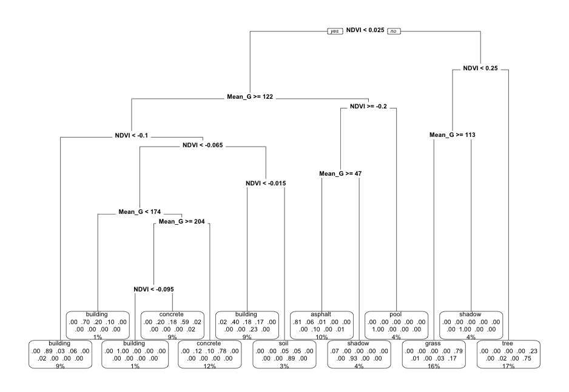
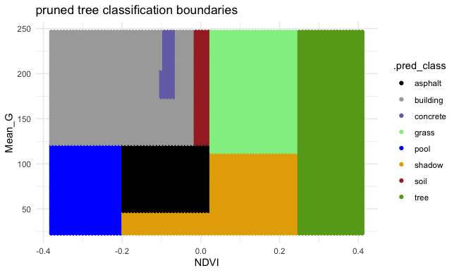
Discuss:
What’s missing from the leaf nodes?
Why did this happen?
What questions do you have about…the algorithm, pruning, or anything else tree related?
Solution:
This tree will never classify an image as a car.
This is because cars are similar to other groups with respect to NDVI and Mean_G (see the plot), and since we don’t have many car data points, other categories are prioritized in the splits.
Example 3: Unpruned tree
Finally, consider a (mostly) UNPRUNED classification tree of land type by Mean_G and NDVI that was built using the following tuning parameters:
set maximum depth to 30
set minimum number of data points per node to 2
set cost complexity parameter to 0.
Check out the classification regions defined by this tree:
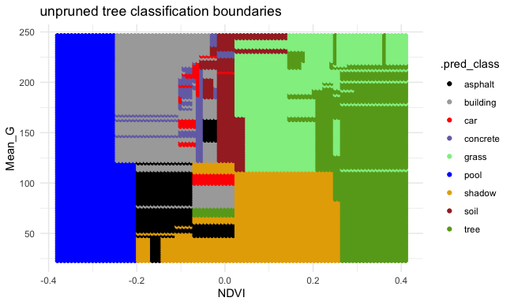
And the tree itself.
This tree was plotted using a function that draws the length of each branch split to be proportional to its improvement to the classification accuracy. The labels are left off to just focus on structure:
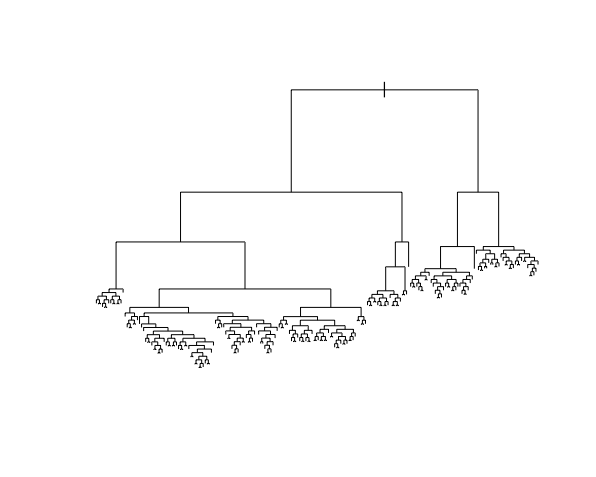
Discuss:
What happens to the length of the split branches the further down the tree we get? What does this mean?
What are your thoughts about this tree?
What questions do you have about the impact of the tuning parameters, or anything else tree related?
Solution:
The length of split branches gets smaller as these splits don’t increase accuracy that much
Used to decide whether or to split based on the cost-complexity parameter (option in rpart)
Exercises
Part 1
Let’s focus on trees.
We’ve explored some general ML themes already:
model building: parametric vs nonparametric
benefits and drawbacks of using nonparametric trees vs parametric algorithm logistic regression
algorithm details:
steps of the tree algorithm
tuning a tree algorithm
In the exercises, you’ll explore some other important themes:
model building: variable selection
We have 147 potential predictors of land type. How can we choose which ones to use?
model evaluation & comparison
How good are our trees? Which one should we pick?
regression vs classification
KNN works in both settings. So do trees!
Exercise 1: Build 10 trees
In modeling land type by all 147 possible predictors, our goal will be to build a tree that optimize the cost_complexity parameter. The chunk below builds 10 trees, each using a different cost_complexity value while fixing our other tuning parameters to be very liberal / not restrictive:
tree_depth = 30 (the default)
min_n in each leaf node = 2 (the default is 20)
Reflect on the code and pause to answer any questions (Q).
# STEP 1: tree specification# Q: WHAT IS NEW HERE?!tree_spec <-decision_tree() %>%set_mode("classification") %>%set_engine(engine ="rpart") %>%set_args(cost_complexity =tune(), min_n =2, tree_depth =NULL)
# STEP 2: variable recipe# NOTHING IS NEW HERE & THERE ARE NO PREPROCESSING STEPS!variable_recipe_big <-recipe(type ~ ., data = land)# STEP 3: tree workflow# NOTHING IS NEW HERE!tree_workflow_big <-workflow() %>%add_recipe(variable_recipe_big) %>%add_model(tree_spec)
# STEP 4: Estimate 10 trees using a range of possible cost complexity values# cost_complexity is on the log10 scale (10^(-5) to 10^(0.1))# Q: BY WHAT CV METRIC ARE WE COMPARING THE TREES?# Q: WHY NOT USE CV MAE?set.seed(253)tree_models_big <- tree_workflow_big %>%tune_grid(grid =grid_regular(cost_complexity(range =c(-5, 0.1)), levels =10),resamples =vfold_cv(land, v =10),metrics =metric_set(accuracy) )
Exercise 2: Whew!
We only built 10 trees above, and it took quite a bit of time. Why are trees computationally expensive?
Solution:
Consider just 1 tree. At every single split, we must evaluate and compare every possible split value of each of the 147 predictors. Building 10 trees and evaluating each using 10-fold CV means that we had to do this 100 times!
Exercise 3: Compare and finalize the tree
Just as with our other algorithms with tuning parameters, we can use the CV metrics to compare the 10 trees, and pick which one we prefer.
Here, we’ll pick the parsimonious tree (which also happens to be the tree with the largest CV accuracy!).
Run & reflect upon the code below, then answer some follow-up questions.
# Compare the CV metrics for the 10 treestree_models_big %>%autoplot() +scale_x_continuous()
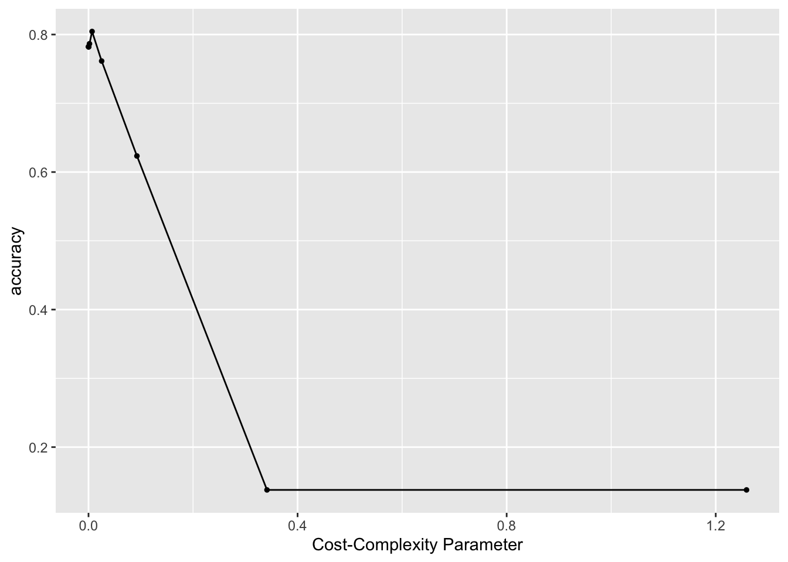
# Pick the parsimonious parameterparsimonious_param_big <- tree_models_big %>%select_by_one_std_err(metric ="accuracy", desc(cost_complexity))parsimonious_param_big
# Finalize the tree with parsimonious cost complexitybig_tree <- tree_workflow_big %>%finalize_workflow(parameters = parsimonious_param_big) %>%fit(data = land)
What is happening as the cost-complexity parameter \(\alpha\) increases:
the tree is getting more complicated and the accuracy is improving
the tree is getting more complicated and the accuracy is getting worse
the tree is getting simpler and the accuracy is improving
the tree is getting simpler and the accuracy is getting worse
What will our tree look like if we use a cost complexity parameter bigger than 0.4? As what category will this tree predict all images to be?
CHALLENGE: For cost complexity parameters bigger than 0.4, the accuracy plateaus at roughly 18.1%. Where does this number come from?! NOTE: If you get stumped here, move on. We’ll come back to this later.
You don’t have to write anything out (this is largely review), but convince yourself that you could:
interpret the plot
i.d. where our parsimonious tree falls on this plot
explain what “parsimonious” means
Solution:
the tree is getting simpler and the accuracy is getting worse
a single root node with no splits, which classifies everything as building
this is the no information rate (which we’ll calculate below)
Exercise 4: Examine the tree
Let’s examine the final, tuned big_tree which models land type by all 147 predictors:
# This tree has a bunch of info# BUT: (1) it's tough to read; and (2) all branch lengths are the same (not proportional to their improvement)big_tree %>%extract_fit_engine() %>%rpart.plot()
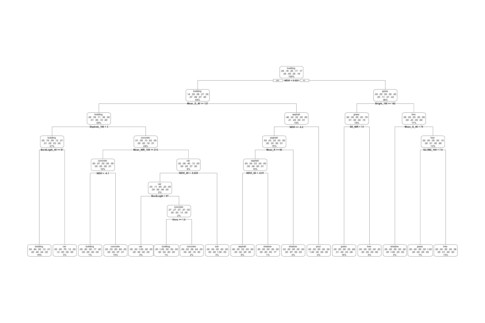
# We can make it a little easier by playing around with# font size (cex) and removing some node details (type = 0)big_tree %>%extract_fit_engine() %>%rpart.plot(cex =0.8, type =0)
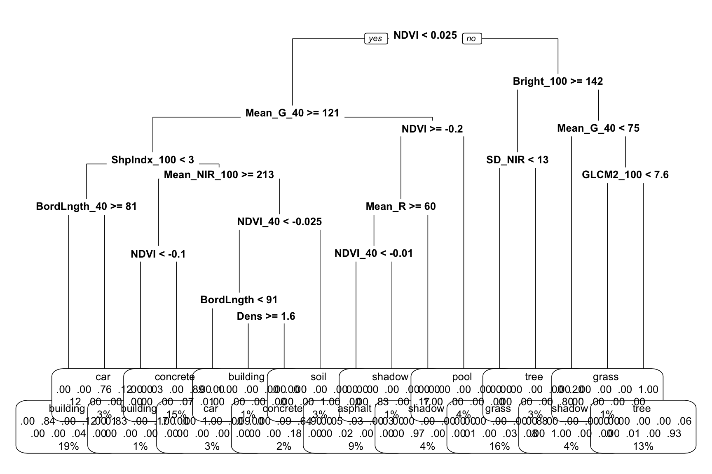
# This tree (1) is easier to read; and (2) plots branch lengths proportional to their improvement# But it has less info about classification accuracybig_tree %>%extract_fit_engine() %>%plot()big_tree %>%extract_fit_engine() %>%text(cex =0.8)
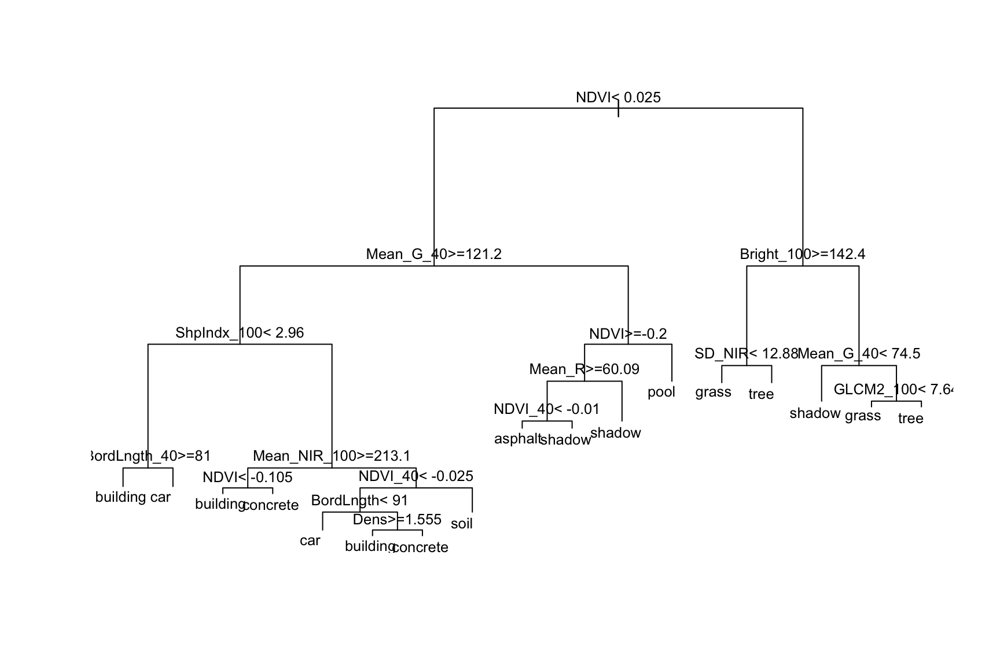
Use the second tree plot to answer the following questions.
Are any land types not captured somewhere in the tree: asphalt, building, car, concrete, grass, pool, shadow, soil, tree? If so, why do you think this is?
This tree considered all 147 possible predictors. Do all of these appear in the final tree?
Of the predictors used in the tree, which seem to be the most important?
Luckily, we don’t have to guesstimate the importance of different predictors.
There’s a mathematical metric: variable importance.
Roughly, a predictor’s importance measures the total improvement in node purity if we were to split on this predictor (even if the predictor isn’t ultimately used in a split).
The bigger the better!
Check out the importance of our 147 predictors.
# Check out just the 10 most important (for simplicity)big_tree %>%extract_fit_engine() %>%pluck("variable.importance") %>%head(10)
# By default, this plots only 10 predictors# At most, it will plot only half of our predictors here# (I'm not sure what the max is in general!)library(vip)big_tree %>%vip(geom ="point", num_features =147)
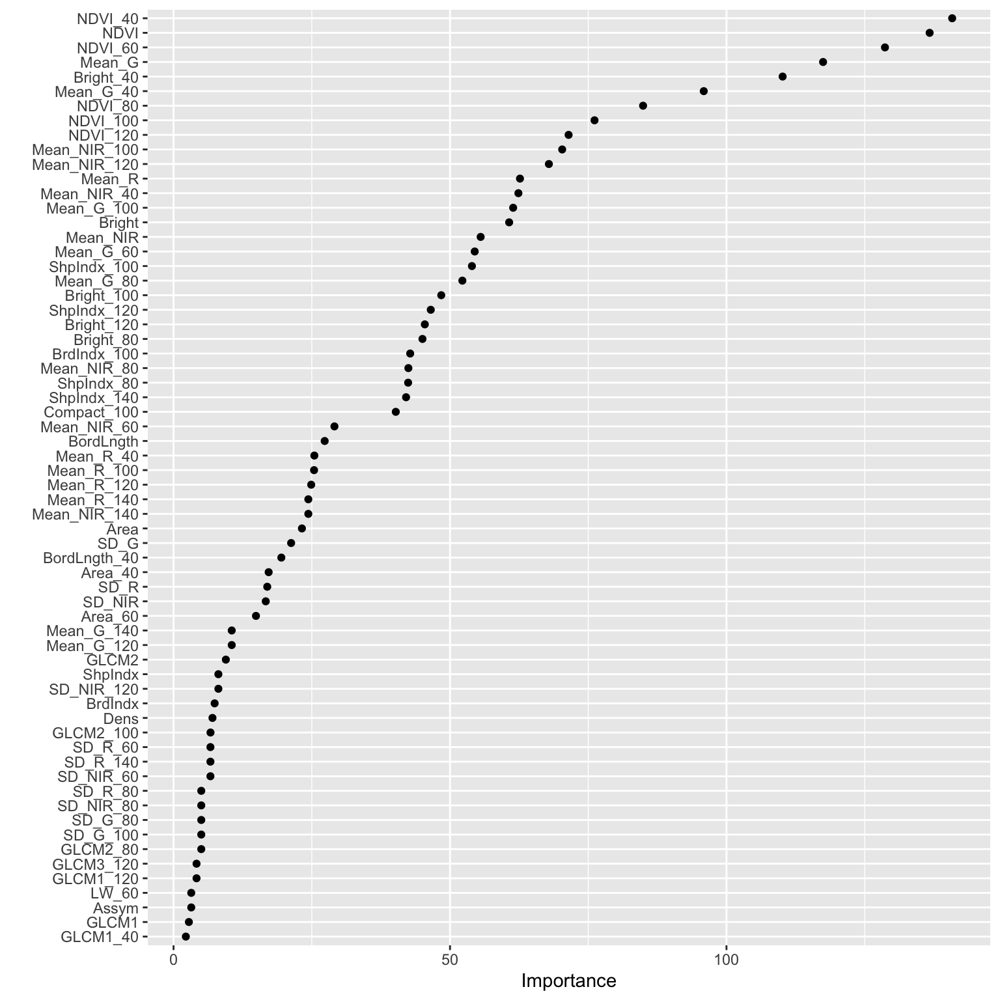
What are the 3 most important predictors by this metric? Do these appear in our tree?
Why do you think a predictor can have high importance but not appear in the tree? Name 2 reasons.
If you could pick only 3 predictors to model land type, would you pick the 3 with the highest importance? Explain.
Solution:
NDVI_40, NDVI, NDVI_60. NDVI_60 is not in the tree.
Since variable importance metrics look at predictor contributions even when they aren’t used in the splits, some of the important variables aren’t even used in our tree. This is explained by: (1) these predictors might be highly correlated / multicollinear with other predictors that do show up in the tree (i.e. we don’t need both); and (2) greediness – earlier splits will, in part, determine what predictors are used later in the tree.
No. Given what we observed above, variable importance doesn’t tell us about the combined importance of a set of predictors, but their individual importance.
Exercise 6: How good is the tree?!? Part 1
Stepping back, our goal for building this tree was to classify land type for a pixel in an image.
As an example, suppose we have a pixel in an image like the first one in our data set:
# pull out metrics for just that value of tuning parametertree_models_big %>%collect_metrics() %>%filter(cost_complexity == parsimonious_param_big$cost_complexity)
# A tibble: 1 × 7
cost_complexity .metric .estimator mean n std_err .config
<dbl> <chr> <chr> <dbl> <int> <dbl> <chr>
1 0.00681 accuracy multiclass 0.804 10 0.0172 Preprocessor1_Model06
Interpret 0.804, the CV overall accuracy rate for the big_tree.
Calculate & compare the tree’s CV overall accuracy rate to the no information rate: is the big_tree better than just always guessing the most common land type? You’ll need the following info:
land %>%nrow()
[1] 675
land %>%count(type)
type n
1 asphalt 59
2 building 122
3 car 36
4 concrete 116
5 grass 112
6 pool 29
7 shadow 61
8 soil 34
9 tree 106
Why can’t we calculate, thus compare, the sensitivity & specificity of our tree? HINT: Think of how these are defined.
Solution:
We estimate that our big_tree will correctly classify roughly 80% of new pixel in an image.
The tree’s accuracy is much better than the no information rate of 18% associated with always guessing “building”.
122/675
[1] 0.1807407
sensitivity & specificity measure the accuracy of classifications for binary outcomes y.
Exercise 7: How good is the tree?!? Part 2
The above CV metric gives us a sense of the overall quality of using our tree to classify a new pixel in an image.
But it doesn’t give any insight into the quality of classifications for any particular land type.
To that end, let’s consider the in-sample confusion matrix (i.e. how well our tree classified the pixels in an image in our sample).
NOTE: We could also get a CV version, but the code is long and the CV accuracy will do for now!
# The mosaic plot of this matrix is too messy to be very useful herein_sample_confusion %>%autoplot() +aes(fill =rep(colnames(in_sample_confusion$table), ncol(in_sample_confusion$table))) +scale_fill_manual(values =c("#000000", "darkgray", "red", "#7570B3", "lightgreen", "blue", "#E6AB02", "brown", "#66A61E")) +theme(legend.position ="none")
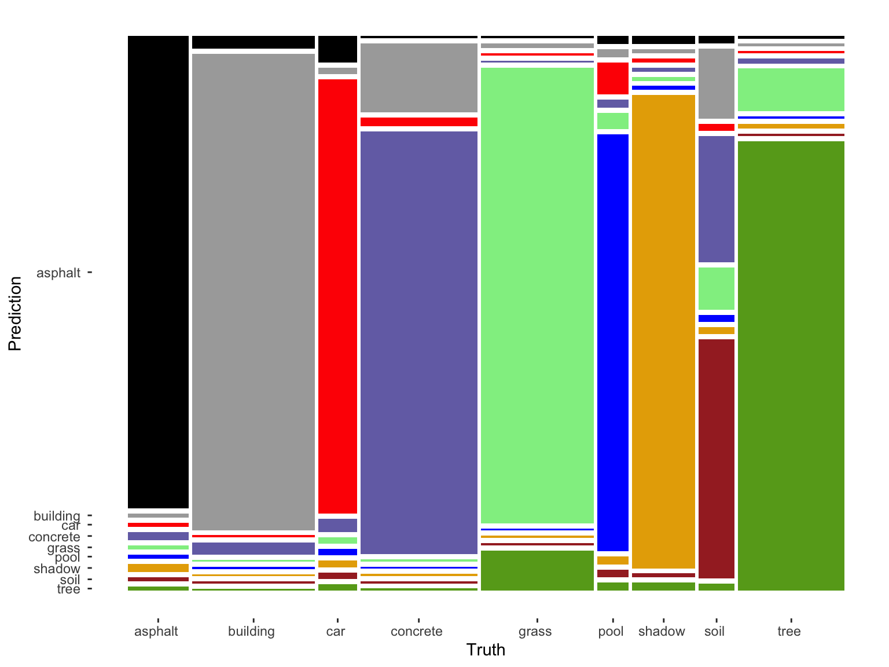
Confirm that 96.6% of asphalt pixels in an image were correctly classified as asphalt.
What land type was the hardest for the tree to classify? Why might this be?
Solution:
57 / (57 + 1 + 1) = 0.966
soil. probably because it had one of the smallest numbers of data points. and the predictor values of soil images must be similar to / hard to distinguish from the predictor values of other types of images.
Part 2
Just like KNN, trees can be applied in both regression and classification settings.
Thus trees add to our collection of nonparametric regression techniques, including KNN, LOESS, and GAM.
To explore, we’ll use regression trees to model the body_mass_g of penguins by their bill_length_mm and species. This is for demonstration purposes only!!!
As the plot below demonstrates, this relationship isn’t complicated enough to justify using a nonparametric algorithm:
data(penguins)ggplot(penguins, aes(y = body_mass_g, x = bill_length_mm, color = species)) +geom_point()
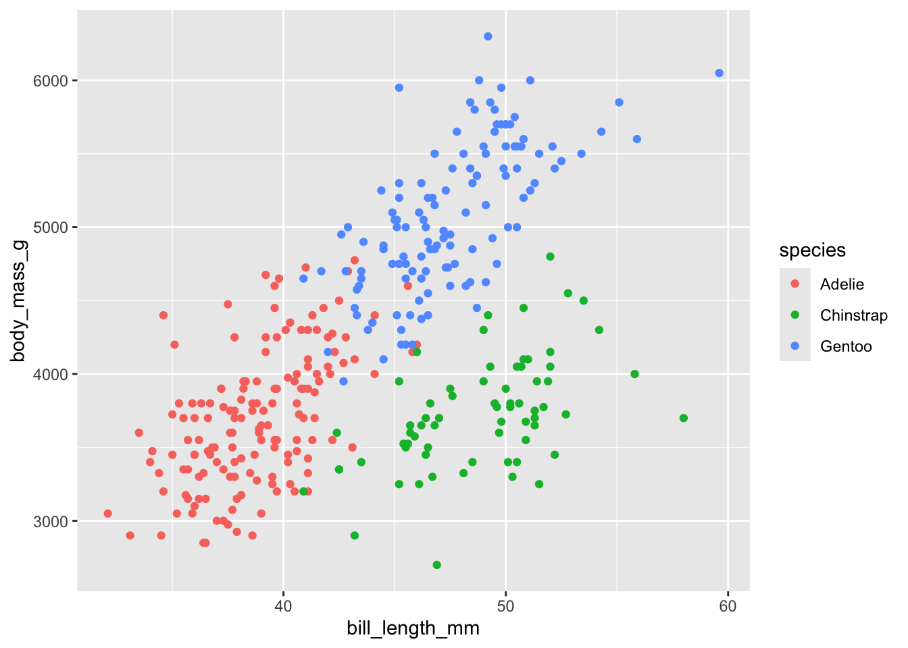
Run the following code to build a regression tree of this relationship.
Pause to reflect upon the questions in the comments:
# CHUNK GOAL# Build a bunch of trees using different cost complexity parameters# STEP 1: regression tree specification# QUESTION: How does this differ from our classification tree specification?tree_spec <-decision_tree() %>%set_mode("regression") %>%set_engine(engine ="rpart") %>%set_args(cost_complexity =tune(), min_n =2, tree_depth =20)# STEP 2: variable recipe# NOTHING IS NEW HERE!variable_recipe <-recipe(body_mass_g ~ bill_length_mm + species, data = penguins)# STEP 3: tree workflow# NOTHING IS NEW HERE!tree_workflow <-workflow() %>%add_recipe(variable_recipe) %>%add_model(tree_spec)# STEP 4: Estimate multiple trees using a range of possible cost complexity values# QUESTION: How do the CV metrics differ from our classification tree?set.seed(253)tree_models <- tree_workflow %>%tune_grid(grid =grid_regular(cost_complexity(range =c(-5, -1)), levels =10),resamples =vfold_cv(penguins, v =10),metrics =metric_set(mae) )
# CHUNK GOAL:# Finalize the tree using the parsimonious cost complexity parameter# NOTHING IS NEW HERE# Identify the parsimonious cost complexityparameterparsimonious_param <- tree_models %>%select_by_one_std_err(metric ="mae", desc(cost_complexity))# Finalize the tree with parsimonious cost complexityregression_tree <- tree_workflow %>%finalize_workflow(parameters = parsimonious_param) %>%fit(data = penguins)
Exercise 8: Regression tree
Check out the resulting regression tree:
# This code is the same as for classification trees!regression_tree %>%extract_fit_engine() %>%rpart.plot()
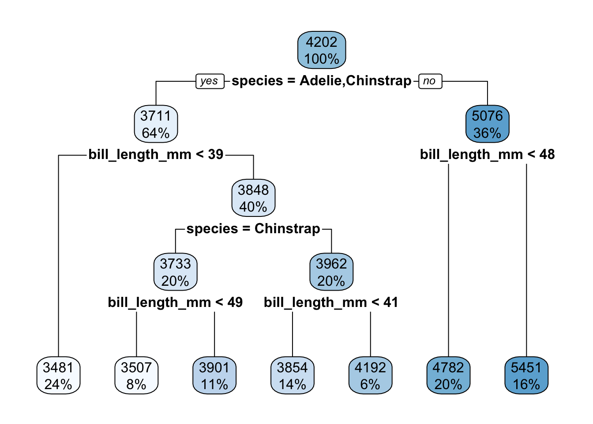
Use your tree (by “hand”) to predict the body mass for the 2 following penguins:
# A tibble: 2 × 3
.pred species bill_length_mm
<dbl> <chr> <dbl>
1 4192. Adelie 45
2 4782. Gentoo 45
Regression trees partition the data points into separate prediction regions. Check out this tree’s predictions (dark dots) and convince yourself that these are consistent with the tree:
regression_tree %>%augment(new_data = penguins) %>%ggplot(aes(x = bill_length_mm, y = body_mass_g, color = species)) +geom_point(alpha =0.35, size =0.5) +geom_point(aes(x = bill_length_mm, y = .pred, color = species), size =1.5) +facet_wrap(~ species) +theme_minimal()
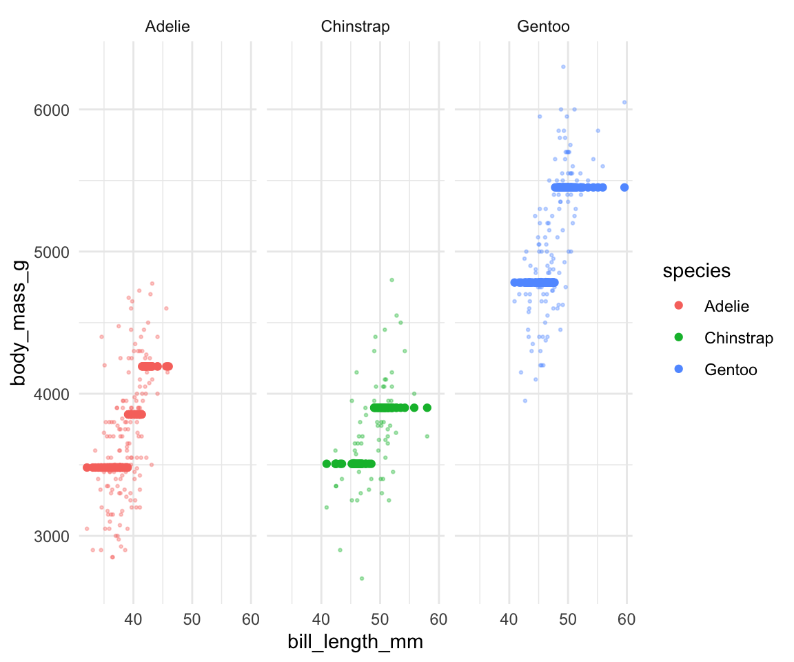
Based on what you’ve observed here, what do you think is a drawback of regression trees?
Solution:
4192 and 4782
same as a
…
at least in this example, the regression tree greatly oversimplifies the relationship of body mass with species and bill length
As usual, take time after class to finish any remaining exercises, check solutions, reflect on key concepts from today, and come to office hours with questions
IMPORTANT: If you are eligible to vote and have not already done so, please do! Polls close at 8 pm.
Upcoming due dates:
HW5: due next week (Nov 13)
HW4 Revisions: due next week (Nov 13)
Quiz 2: two weeks from today (Nov 19)
Notes: R Code
R code: KNN
Suppose we want to build a KNN model of some categorical response variable y using predictors x1 and x2 in our sample_data.
# Load packageslibrary(tidymodels)library(kknn)# Resolves package conflicts by preferring tidymodels functionstidymodels_prefer()
# STEP 1: KNN model specificationknn_spec <-nearest_neighbor() %>%set_mode("classification") %>%set_engine(engine ="kknn") %>%set_args(neighbors =tune())# STEP 2: variable recipevariable_recipe <-recipe(y ~ x1 + x2, data = sample_data) %>%step_nzv(all_predictors()) %>%step_dummy(all_nominal_predictors()) %>%step_normalize(all_numeric_predictors())# STEP 3: KNN workflowknn_workflow <-workflow() %>%add_recipe(variable_recipe) %>%add_model(knn_spec)# STEP 4: Estimate multiple KNN models using a range of possible K valuesset.seed(___)knn_models <- knn_workflow %>%tune_grid(grid =grid_regular(neighbors(range =c(___, ___)), levels = ___),resamples =vfold_cv(sample_data, v = ___),metrics =metric_set(accuracy) )
Tuning K
# Calculate CV accuracy for each KNN modelknn_models %>%collect_metrics()# Plot CV accuracy (y-axis) for the KNN model from each K (x-axis)knn_models %>%autoplot()# Identify K which produced the highest (best) CV accuracybest_K <-select_best(knn_models, metric ="accuracy")best_K# Get the CV accuracy for KNN when using best_Kknn_models %>%collect_metrics() %>%filter(neighbors == best_K$neighbors)
We’ll focus on optimizing the cost_complexity parameter, while setting min_n and tree_depth to fixed numbers. For example, setting min_n to 2 and tree_depth to 30 set only loose restrictions, letting cost_complexity do the pruning work.
# STEP 1: tree specification# If y is quantitative, change "classification" to "regression"tree_spec <-decision_tree() %>%set_mode("classification") %>%set_engine(engine ="rpart") %>%set_args(cost_complexity =tune(), min_n =2, tree_depth =30)# STEP 2: variable recipe# There are no necessary preprocessing steps for trees!variable_recipe <-recipe(y ~ x1 + x2, data = sample_data)# STEP 3: tree workflowtree_workflow <-workflow() %>%add_recipe(variable_recipe) %>%add_model(tree_spec)# STEP 4: Estimate multiple trees using a range of possible cost complexity values# - If y is quantitative, change "accuracy" to "mae"# - cost_complexity is on the log10 scale (10^(-5) to 10^(0.1))# I start with a range from -5 to 2 and then tweakset.seed(___)tree_models <- tree_workflow %>%tune_grid(grid =grid_regular(cost_complexity(range =c(___, ___)), levels = ___),resamples =vfold_cv(sample_data, v = ___),metrics =metric_set(accuracy) )
Tuning cost complexity
# Plot the CV accuracy vs cost complexity for our trees# x-axis is on the original (not log10) scaletree_models %>%autoplot() +scale_x_continuous()# Identify cost complexity which produced the highest CV accuracybest_cost <- tree_models %>%select_best(metric ="accuracy")# Get the CV accuracy when using best_costtree_models %>%collect_metrics() %>%filter(cost_complexity == best_cost$cost_complexity)# Identify cost complexity which produced the parsimonious treeparsimonious_cost <- tree_models %>%select_by_one_std_err(metric ="accuracy", desc(cost_complexity))
Finalizing the tree
# Plug in best_cost or parsimonious_costfinal_tree <- tree_workflow %>%finalize_workflow(parameters = ___) %>%fit(data = sample_data)
Plot the tree
# Tree with accuracy info in each node# Branches are NOT proportional to classification improvementfinal_tree %>%extract_fit_engine() %>%rpart.plot()# Tree withOUT accuracy info in each node# Branches ARE proportional to classification improvementfinal_tree %>%extract_fit_engine() %>%plot()final_tree %>%extract_fit_engine() %>%text()
Use the tree to make predictions / classifications
# Put in a data.frame object with x1 and x2 values (at minimum)final_tree %>%predict(new_data = ___) # OR final_tree %>%augment(new_data = ___)
Examine variable importance
# Print the metricsfinal_tree %>%extract_fit_engine() %>%pluck("variable.importance")# Plot the metrics# Plug in the number of top predictors you wish to plot# (The upper limit varies by application!)library(vip)final_tree %>%vip(geom ="point", num_features = ___)
Evaluate the classifications using in-sample metrics
# Get the in-sample confusion matrixin_sample_confusion <- final_tree %>%augment(new_data = sample_data) %>%conf_mat(truth = type, estimate = .pred_class)in_sample_confusion# Plot the matrix using a mosaic plot# See exercise for what to do when there are more categories than colors in our pallette!in_sample_confusion %>%autoplot() +aes(fill =rep(colnames(in_sample_confusion$table), ncol(in_sample_confusion$table))) +theme(legend.position ="none")